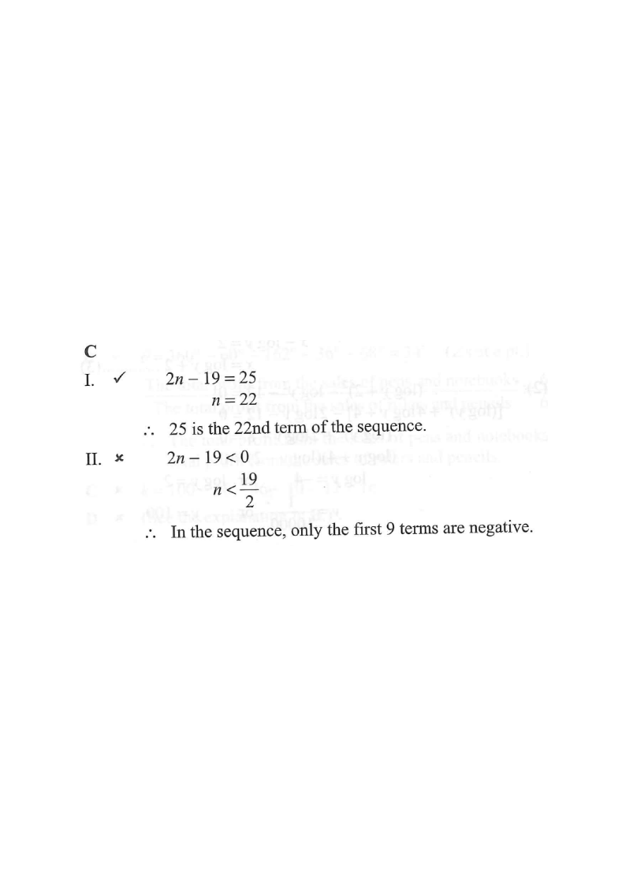

Step 1 · The sequence \(T(n)=2n-19\): dots show terms, the line is the trend \(2n-19\).
HKDSE 2013 Paper 2, Q38
The \(n\)th term of a sequence is \(2n-19\). Which of the following is/are true?
I. \(25\) is a term of the sequence.
II. The sequence has \(10\) negative terms.
III. The sum of the first \(n\) terms of the sequence is \(n^{2}-18n\).

\(T(n)=2n-19\) is an arithmetic sequence with common difference
\[T(n+1)-T(n)=\bigl(2(n+1)-19\bigr)-(2n-19)=2.\]
First term \(T(1)=2-19=-17\), common difference \(d=2\).
Hint: always find \(T(1)\) and \(d\) first — they drive all three statements.
Put \(T(n)=25\):
\[2n-19=25 \;\Rightarrow\; 2n=44 \;\Rightarrow\; n=22.\]
\(n=22\) is a positive integer, so \(25\) is the \(22\)nd term.
Statement I is TRUE ✔
Hint: a value is a term of the sequence only if the resulting \(n\) is a positive integer.
Require \(T(n)<0\):
\[2n-19<0 \;\Rightarrow\; 2n<19 \;\Rightarrow\; n<\frac{19}{2}=9.5.\]
Since \(n\) is a positive integer, \(n=1,2,\dots,9\) — that is \(9\) terms:
\(-17,-15,-13,-11,-9,-7,-5,-3,-1\) (then \(T(10)=1>0\)).
Statement II is FALSE ✘ (only 9 negative terms, not 10)
Hint: \(n\) is an integer, so \(n<9.5\) means \(n\le 9\).
Arithmetic series sum with first term \(a=-17\), last term \(T(n)=2n-19\):
\[S(n)=\frac{n}{2}\bigl[T(1)+T(n)\bigr]=\frac{n}{2}\bigl[(2(1)-19)+(2n-19)\bigr]=\frac{n}{2}\bigl(2n-36\bigr).\]
\[S(n)=n^{2}-18n.\]
Statement III is TRUE ✔
Hint: for an AP, \(S(n)=\dfrac{n}{2}[2a+(n-1)d]\) gives the same result.
Only Statements I and III are true.
That matches option C.
Hint: double-check Statement II — a common trap is counting \(n\le 9.5\) as "10 terms".
Question. The \\(n\\)th term of a sequence is \\(T(n)=4n-30\\). (a) Is \\(26\\) a term of the sequence? (b) How many terms of the sequence are negative? (c) Find \\(S(n)\\), the sum of the first \\(n\\) terms.